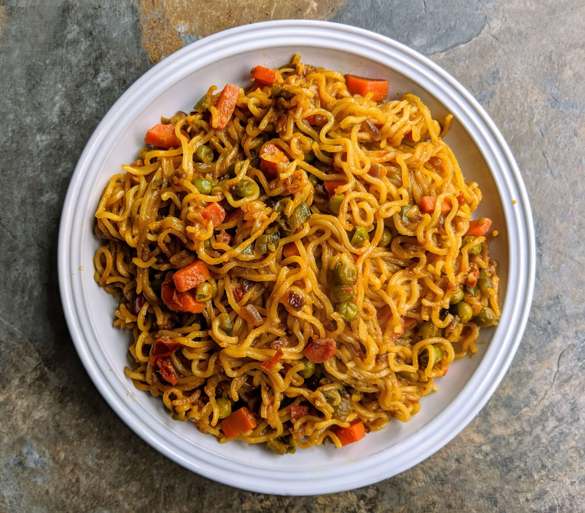

Recipes Page

Maggi Recipe
- Take 1 cup of water in a pan.
- Boil the water.
- Add Maggi noodles and tastemaker (spice mix).
- Cook for 2-3 minutes.
- Stir sometimes so it doesn’t stick.
- Once noodles are soft, turn off the gas.
- Done! Eat hot.
Tea Recipe
- Take 1 cup of water in a pan.
- Add 1 spoon tea leaves (chai patti).
- Add sugar as you like.
- Boil it for 2-3 minutes.
- Add half cup of milk.
- Boil again for 2-3 minutes.
- Strain it in a cup.
- Done! Your tea is ready.